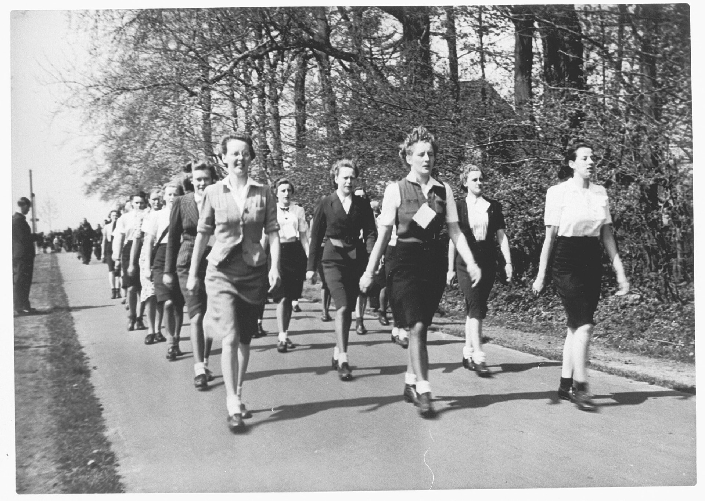

Abstract
The 2023 Dutch elections revealed a concerning trend: a significant shift toward right-wing politics, particularly among younger voters. As a feminist myself, I find this political realignment deeply troubling, as these movements often advance policies that undermine women's autonomy, marginalise LGBTQIA+ individuals, promote xenophobic immigration stances, and reinforce traditional gender hierarchies. Particularly intriguing is the increasing visibility of women in leadership positions within right-wing political organisations. This phenomenon raises critical research questions: What motivates women to participate in gender-conservative movements that often reinforce patriarchal structures? In what ways are these women simultaneously elevated yet marginalized within their political spheres? Can right-wing ideology be reconciled with feminist principles, or do these represent fundamentally incompatible political frameworks? My research will examine this complex relationship through a historical and contemporary lens, exploring the emergence of women in right-wing politics from the early 20th century through to present-day figures like Alice Weidel of Germany's Alternative für Deutschland. I will analyse the tension between women's rights advocacy and right-wing political platforms, investigate anti-feminist currents within these movements, and explore the psychological and sociocultural factors that influence women's participation. This project employs a multi-method approach, incorporating diverse sources including academic literature, historical documents, primary and secondary quotes, visual materials, and qualitative interviews with relevant stakeholders including educators, students, and women who identify with right-wing political movements.
Introduction
The emergence of female leadership within Europe's right-wing movements presents a disturbingly fascinating paradox in contemporary politics. As figures like Marine Le Pen, Alice Weidel and Giorgia Meloni ascend to positions of power, they challenge our understanding of the relationship between gender and conservative ideology. These leaders have risen to prominence by leading political movements that often advocate for traditional gender roles, oppose feminist reforms and promote policies that potentially restrict women's autonomy. This apparent contradiction - women leading movements that seemingly conflict with gender equality - offers a crucial lens through which we witness the evolving nature of right-wing politics in Europe. Their success raises fundamental questions about the complex interplay between gender, power and conservative ideology. This thesis investigates the psychological mechanisms driving women's engagement with anti-feminist ideologies, focusing on right-wing female leadership in European movements from the early 20th century to the present. Through critical analysis of anti-feminist ideological formations, I examine how women in right-wing movements construct their political identities while reinforcing systems of oppression. By analysing how these leaders navigate and legitimise their positions within patriarchal power structures, this research reveals the complex dynamics between gender, political authority and conservative movements. This investigation illuminates not only the evolution of right-wing politics but also the troubling persistence of anti-feminist ideologies in contemporary political landscapes, where women continue to participate in movements that ultimately undermine collective gender liberation.
Emergence of women in right-wing movements
The origin of the terms “right” and “left” trace back to the French Revolution in 1789. In the French National Assembly, seating arrangements reflected ideological divides. Supporters of the Ancien Régime, who favoured monarchy, tradition and established hierarchies, sat to the right of the assembly’s president. Advocates for revolutionary change, emphasising equality and the dismantling of old structures, took their places on the left. This physical alignment eventually became symbolic of broader political ideologies, with "right-wing" coming to represent conservatism and "left-wing" embodying progressive or revolutionary change (Andrews, 2014)[1]. The term fascism originates from the Italian word “fascismo,” derived from “fascio” (bundle), symbolising strength through unity, a concept that Benito Mussolini used to justify his totalitarian regime in Italy. While often associated with Mussolini’s rule and Adolf Hitler’s Nazi Germany, fascism has manifested in various forms across different nations, adapting to local political and social contexts.
National Assembly, any of various historical French parliaments or houses of parliament. From June 17 to July 9, 1789, it was the name of the revolutionary assembly formed by representatives of the Third Estate
The traditionalist role of women in fascism
Despite their subordinate positions, women played a crucial role in disseminating these ideologies, reinforcing their societal function as guardians of cultural and national identity. Their responsibilities included political indoctrination, where they were immersed in Nazi beliefs, particularly racial superiority and antisemitism, through structured lessons and discussions. Physical fitness was also a key component of Nazi ideology, with activities such as hiking and gymnastics designed to implement discipline and promote health, ultimately preparing them for their designated role as mothers of the so-called "Aryan race" (United States Holocaust Memorial Museum, Washington, DC, n.d.)[2]. The emergence of Romantic nationalism in the 19th century, when many European nations framed the family as the bedrock of national identity, further solidified fascist ideologies as they were seen to uphold traditional family values, positioning women primarily as mothers entrusted with preserving and perpetuating the nation. Motherhood was not merely a private duty but a civic one, extending beyond the confines of the home into the broader public sphere.
Women were depicted as the custodians of the nation's future, their reproductive and nurturing roles were essential to the ideological and biological continuity of the state.
In right-wing movements, the concept of motherhood has functioned as both a source of political legitimacy and a mechanism of control. While it provided women with a means of securing public recognition and influence, it simultaneously confined them within a rigid framework that subordinated their individual aspirations to their prescribed role as caretakers of the "nation’s future." Hitler encapsulated this vision in the doctrine of the three "Ks"—Kinder, Küche, Kirche (children, kitchen, church) (Mast-Kirschning, 2004)[3].
Singing demonstration on the "Grote Markt" of the BDM and Hitler Youth
Internalised misogyny
This ideological framework aligns closely with the concept of internalised misogyny, where women adopt and perpetuate patriarchal values that ultimately limit their own autonomy. Internalised misogyny refers to the unconscious absorption of societal beliefs that position women as naturally subordinate, leading some women to reinforce traditional gender roles as a means of gaining validation and security within conservative structures (Bearman et. al, 2009)[4]. Within right-wing movements, this manifests in the glorification of domesticity and maternal duty, with women advocating for policies that restrict female independence under the guise of protecting cultural stability.
Fem-fascism in germany and the netherlands
The Bund Deutscher Mädel (BDM), the female wing of the Nazi youth movement, offered many women a sense of community and belonging, particularly during a period of political instability and economic hardship in Germany. In a time when societal structures were fractured, the BDM provided a sense of security, social acceptance, and purpose. For many, the BDM offered a sense of community and belonging.
Psychological manipulation and propaganda reinforced this sense of duty, particularly the emphasis on their importance as future mothers, aligning with the broader cultural ideals of womanhood and patriotism. Peer pressure also played a significant role, as women were encouraged to conform to societal expectations and participate in the movement.Additionally, the fear of social ostracism or punishment for non-compliance drove some women to join.
Sophie Scholl, a known leader of the Nazi resistance group “Weiße Rose”, first took part in the League of German Girls where she became a dedicated leader at the age of 12.

Sophie (right) in typical BDM uniform, 1937
What appealed to her were the shared outings in nature, love for their homeland and the sense of community (Kaufmann, 2006)[5]. Eight years later she would sacrifice her life fighting against the very regime she once em- braced, transformed from an innocent participant in Nazi youth programs into one of Germany's most courageous moral voices — her execution at age 21 standing as a testament to the power of awakened conscience in the face of totalitarian evil. Although not officially recognised as a political leader, Gertrud Scholtz-Klink was a key figure in Hitler's inner circle, particularly as “Reichsfrauenführerin” (Reich Women's Leader) in 1934, a position created to oversee women’s activities and ensure they aligned with Nazi ideals. Her leadership highlights the paradoxical position of women in far-right movements: while she held significant influence over millions of German women through these organisations, her power was constrained within the rigid framework of Nazi gender ideology. Scholtz-Klink actively denounced feminism and women's suffrage, framing the movement for women's political and economic independence as a threat to the stability of the Volksgemeinschaft (people's community) (Frasier, 2021)[6]. She said, "Anyone who has seen the Communist and Social Democratic women scream on the street and in the parliament will realise that such an activity is not something which is done by a true woman." This anti-feminist rhetoric became common throughout fascist movements across Europe, where women were often positioned as guardians of traditional values rather than political actors. In the Netherlands, as in many European countries, many women were not just passive observers but active participants in fascist movements. The “Nationaal-Socialistische Vrouwenorganisatie” (NSVO) or National Socialist Women’s Organisation was the female counterpart to the male-dominated National Socialist Movement (NSB) in the Netherlands. Formed in 1938, the NSVO was a key part of the NSB’s broader strategy to promote National Socialist ideals. Its mission was primarily to mobilise women as both ideological supporters and propagators of fascist and Nazi ideologies (De Graaf, 2010)[7]. Though the NSB's political leadership was almost entirely male, the NSVO played an essential role in translating the movement’s ideals into the private, domestic sphere, aligning closely with fascist gender roles with a mere 1000 female participants (Vermeulen, 2012)[8]. Under the leadership of Julia Op ten Noort and Elisabeth Keers-Laseur, the NSVO sought to ensure that Dutch women were properly integrated into the fascist ideology. The organisation was, just as the BDM, designed to reinforce women's traditional roles as mothers, caregivers and keepers of the nation’s moral values, but it also tasked them with contributing to the party’s political activities. The organisation created a space for women to become active participants in the fascist project, while still upholding the traditional expectations of domestic life. The NSVO organised political meetings, social gatherings, rallies and charitable work, encouraging women to promote the NSB’s message of nationalism, anti-semitism and authoritarianisim (Hendriks, 2015)[9]. Women’s participation in the NSVO was framed as a civic and patriotic duty. Their main contribution was to support the NSB’s vision of an idealised, racially pure society, where the family unit was the cornerstone of national strength (De Graaf, 2010)[10].
NSVO-women hiking in Groningen, 18 may 1941.
The NSVO’s activities were designed to propagate National Socialist values through social networks and community engagement. Women were expected to maintain the household as a sanctuary for the values of purity and discipline, aligning themselves with a nationalist ideology that held up the family as the ultimate institution of political order. This extension of fascist principles into the private lives of women was central to the NSB’s strategy of societal control, as it tied women’s identities directly to the success of the movement (Glassman, 2019)[11]. Psychologically, these women were driven by a mix of nationalist passion and internalised patriarchal ideology (Passerini, 2001)[12]. They saw themselves as critical agents of national regeneration, embracing a vision where feminine virtue was defined through sacrifice, reproduction and unwavering support for the fascist state. Their identity was constructed through a paradoxical framework: they sought political visibility while accepting and often enthusiastically promoting traditional gender hierarchies (Willson, 2002)[13]. Their psychological motivation stemmed from multiple interconnect- ed factors: a desire for collective identity, a response to post-World War I social instability and an internalised narrative of female heroism that was simultaneously restrictive and empowering. Similar to Germany’s BDM, by aligning with fascist ideals, they transformed traditional feminine passivity into a form of militant nationalism.
“Moffenmeid”
During and after World War II, the Dutch term "moffenmeid", meaning "German girl" or "Nazi girl", was used to describe Dutch women who were seen as collaborators with the German occupiers. These women were stigmatised for their relationships with German soldiers or their support for Nazi policies, often labeled as traitors to the nation.
The "moffenmeid" became a symbol of perceived betrayal and moral corruption, reflecting the broader societal response to women who strayed from the fascist ideals imposed on them (Sprekende Geschiedenis, n.d.)[14].
This dual narrative, where women were both applauded for embodying nationalist femininity and punished for crossing the boundaries of ideological loyalty, underscores how women’s roles were simultaneously critical to fascist control and vulnerable to harsh judgment when they were seen to violate the state’s moral and political expectations (Hendriks, 2015)[15].
Members of the NSB (Dutch national socialist party) and shaven 'Moffenmeiden' (kraut girls) are being brought in by members of the Dutch Resistance.
This tension continues in modern society, where the belief that ‘we don't choose who we love’ conflicts with ideological expectations. Today we see this illustrated when right-wing politicians like Alice Weidel (whom I will examine in greater detail later in this thesis) form relationships with partners from different cultural or ideological backgrounds, creating a personal-political divide between their intimate connections and their public political positions.
The New Face of European White Nationalism
Post-World War II, the collapse of fascist regimes largely discredited far-right ideologies, reshaping women’s roles in conservative European politics. Progressive milestones in the 1960s contributed to the gradual but significant emancipation of women’s social rights. Such milestones included the introduction of the birth control pill and legal advancements like women’s ability to open bank accounts independently, which paved the way for women who transitioned into leadership roles within mainstream conservative and Christian Democratic parties. In 1979, Margaret Thatcher made history as the first woman to lead the Conservative Party, a mile- stone which might have suggested progress for women in politics (Rowan, 2015)[16]. But rather than embracing feminist ideals, Thatcher’s leadership demonstrated a form of internalised misogyny, manifesting in her rejection of feminist principles and her adoption of a leadership style tradition- ally associated with masculinity. She famously declared, “I owe nothing to women’s lib” (liberation) (Rowan, 2015)[17], making clear her opposition to the feminist movement. By framing her success as a product of individual resolve rather than collective struggle, she distanced herself from gender-based solidarity, presenting herself as an exception rather than a challenge to the existing power structure. Though this approach secured her place as Britain's first female prime minister, it also reinforced the notion that true political power was inherently masculine, suggesting that women could only rise by conforming to male-dominated leadership norms. This pattern of women in right-wing politics navigating gendered expectations while maintaining conservative values has continued into the present day, evolving with contemporary political landscapes but maintaining similar tensions.
I am not queer, but i am married to a woman i have known for 30 years.
Alice Weidel, marine le pen and giorgia meloni
In recent decades, right-wing parties have seen a significant rise in popularity, particularly in Europe. In the 21st century, women in right-wing politics have continued to gain visibility, often blending conservative rhetoric with modern political strategies.
This shift can be traced back to the early 2000s, when far-right ideologies, once largely considered taboo and ostracised by political elites, began to gain mainstream attention. The National Front in France, led by Jean-Marie Le Pen, for example, was once associated with fascism, xenophobia and extremism, which lead to widespread condemnation from the political establishment. But over time, the party underwent a transformation under the leadership of his daughter Marine Le Pen, who rebranded the movement, toning down its most radical elements while still advocating for nationalist, anti-immigrant policies.
This shift reflects broader trends in global politics post-war, where populist right-wing movements have capitalised on growing dissatisfaction with traditional political structures, economic inequality and fears around immigration and cultural change (O’Connor, 2017)[18]. Fascism, once considered an unconventional ideology by the political elite, has found a more acceptable expression within mainstream right-wing parties and even political figures that once held extreme views are now gaining wider support, signalling a shift in what is considered politically acceptable in the modern age.
France’s National Rally, under Marine Le Pen, utilises a strategic form of “feminist nationalism,” advocating for women’s protection while opposing left-wing gender policies and gender theory in schools. Although Le Pen does not call for an abortion ban, she has supported restrictions. Her psychological approach could transform feminism from an emancipatory movement to a perceived threat to cultural authenticity. Le Pen positions herself as protecting "traditional" French women against multiculturalism, immigration and what she frames as progressive gender deconstruction (Haegel, 2015)[19]. One might presume that her extremist views stem from her father, Jean-Marie Le Pen. As stated earlier, he established a deeply antisemitic, xenophobic far-right ideology that Marine strategically rebranded while maintaining core nationalist principles. Her anti-feminist stance can be partially understood as a psychological inheritance and strategic differentiation from her father's extreme rhetoric (Haegel, 2015)[20].
This strategy of repackaging right-wing ideology through a carefully crafted public persona is not unique to Le Pen but has become a common approach among contemporary female right-wing leaders across Europe.
Alice Weidel presents a complex figure in German modern right-wing politics as co-leader of the Alternative for Germany (AfD) party.
Her profile challenges conventional expectations in several ways. She is openly gay, lives with her female partner who is of Sri Lankan descent, lives as an expat in Switzerland and has a background as a business consultant with a doctorate in economics. Yet she leads a party known for promoting traditional values and opposing same-sex marriage (Schmidt, 2023)[21].
Weidel's political rhetoric focuses primarily on economic nationalism, anti-immigration policies as well as Euroscepticism (Wagner & Schmidt 2022)[22]. She has consistently advocated for stricter immigration controls, criticised Germany's asylum policies and called for stronger border security measures.
Alice Weidel with her wife Sarah Bossard at an event in Zürich, Switzerland
Under an AfD-governed Germany, Weidel might face the dismantling of legal protections for same-sex partnerships that were established when Germany legalised same-sex marriage in 2017. Her relationship with a non-German partner could become complicated under the restrictive immigration policies the AfD upholds. While Switzerland maintains close ties with Germany, the party's skepticism toward foreign influence and multicultural families with homosexual partners would create an uncomfortable spotlight on her own domestic arrangement. Meanwhile, Italy’s “Brothers of Italy”, led by Giorgia Meloni, advances ultra-conservative family policies, discouraging divorce and single parenthood, restricting abortion access and rejecting LGBTQIA+ rights. Meloni positions herself as exceptional — different from women who "need" feminist support. This psychological separation would allow her to maintain anti-feminist stances without experiencing them as self-contradictory. She manages cognitive dissonance by reframing women's issues through conservative concepts of "family values" and "natural order." These same psychological mechanisms, identity-based rationalisation and cognitive dissonance management, play crucial roles in the broader context of extremist radicalisation on digital platforms.
(Online) radicalisation
Online platforms, especially spaces like 4chan, have emerged as critical breeding grounds for violent extremism, with the alt-right pipeline providing a prime illustration. This term describes the gradual process by which individuals are exposed to and radicalised by extremist ideologies through the culture of the internet. Platforms such as 4chan offer users anonymity and a sense of community, often drawing in individuals who feel disconnected or marginalised. One could say that these largely unregulated spaces enable alt-right groups to spread radical content, conspiracy theories and provocative rhetoric, frequently using memes, trolling and viral techniques to recruit and further radicalise new members (Colley et al, 2020)[23].
As individuals immerse themselves in these environments, they become desensitised to extremism, with the exposure and amplification of such ideologies accelerating the radicalisation process. The internet’s capacity to create echo chambers, where extreme viewpoints are reinforced and normalised, has not only facilitated the spread of alt-right ideologies but also helped these beliefs gain traction in the political mainstream. This dynamic fosters a distinct ‘us vs. them’ mentality, uniting those who feel disenfranchised in opposition to perceived societal threats.
For some women, especially those who feel alienated or distanced from mainstream feminist discourse, this online radicalisation could result in the adoption of anti-feminist ideologies that stress traditional gender roles and nationalist values. This shift is increasingly visible in the rise of far-right political parties across Europe, which reflect the nationalist and anti-progressive rhetoric found within alt-right online communities. The AfD, for example, have used their ideological alignment for their digital outreach campaign on platforms such as TikTok, which has played a crucial role in the party’s success (SWR, 2024)[24].
System justification theory
This brings us to the System Justification Theory, a concept developed by John Jost and his col- leagues in the 1990s. This social psychological framework sheds light on why individuals often defend and uphold social systems that seem to work against their own interests or appear to disadvantage them. In the context of the rising tide of European white nationalism, system justification manifests in the ways women rationalise and support traditional gender hierarchies. It provides a lens through which we can understand the paradox of women holding significant political power while simultaneously advocating for policies that may restrict broader social advancement for women.
Through the lens of system justification, these women reconcile their personal empowerment with anti-feminist stances by viewing traditional gender roles as sources of stability, security and social cohesion. In this way, their success within right-wing movements strengthens their belief in the legitimacy of these systems, creating a self-perpetuating cycle of justification.
Within these movements, women seem to often reinforce patriarchal norms by viewing traditional gender roles not as oppressive, but as natural and desirable. These roles are framed as foundations of stability, moral clarity and societal cohesion. According to System Justification, this behaviour can be seen as a psychological adaptation to conservative ideologies, which emphasise order, hierarchy and traditional family values (Jost & Banaji, 1994)[25]. In right-wing circles, the rejection of feminism is often framed as a resistance to what they call "modern degeneracy" and "globalist left- ism," reinforcing a nostalgic vision of a fem-fascist where women's primary roles were centred on motherhood and homemaking (Di Sabato & Hughes, 2020)[26].
For women involved in right-wing movements, adopting anti-feminist rhetoric offers a sense of purpose and belonging within a coherent, structured worldview. This dynamic is evident in the evolution from Fem-Fascism to the contemporary Tradwife aesthetic, where submission is reframed as a form of empowerment (Love, 2020)[27]. In the next chapter of this thesis, I will delve deeper into the concept of the “Tradwife” and explore its intersection with Femonationalism.
The emergence of feminist nationalism shows a significant shift in how right-wing movements approachgender politics, demonstrating what Farris (2017)[28] terms "femonationalism", the exploitation of feminist themes by nationalist parties and neoliberal governments. This ideological framework, particularly visible in contemporary European right-wing politics, illustrates what Akkerman and Hagelund (2021)[29] describe as the strategic adaptation of feminist discourse while maintaining nationalist objectives. The phenomenon manifests primarily through the strategic deployment of women's rights rhetoric to advance nationalist agendas, notably in anti-immigration contexts, while simultaneously promoting traditional gender roles and family structures within a nationalist framework (Drumond et. al, 2024)[30]. The inherent contradictions within feminist nationalism, what Norocel (2013)[31] describes as simultaneously promoting women's rights while advocating for traditional gender roles, reveal its nature as a political strategy rather than a coherent ideology. Farris (2021)[32] argues that the emergence of feminist nationalism represents not merely a tactical evolution in right-wing politics but a fundamental reconfiguration of how gender equality is conceptualised and deployed in nationalist political movements, with significant implications for both feminist and nationalist politics in contemporary Europe. This transformation of nationalist discourse through the selective incorporation of feminist elements highlights what Verloo and Paternotte (2018)[33] analyse as the complex ways in which traditional political movements adapt to changing social norms while maintaining their core ideological commitments. To further conceptualise this phenomenon of ideological adaptation and appropriation, we can turn to contemporary theoretical frameworks that explain how political movements selectively mirror progressive concepts.
The mirror world
Naomi Klein's (2023)[34] concept of the "mirror world" in her book "Doppelgänger: A Trip into the Modern World" provides a framework for understanding the role of right-wing women in contemporary politics. The mirror world represents a distorted reflection of reality, where familiar ideas and identities are reframed to serve reactionary purposes.
This mirror world plays a crucial role in the spread of misinformation and the emergence of female-led right-wing activism. She describes how conspiracy narratives thrive in the mirror world, where facts are inverted and trust in institutions is fragile. Women have become key figures in these movements. Naomi Wolf, Klein’s real-life doppelgänger, once a respected feminist thinker, now spreads conspiracy theories under the guise of protecting freedoms. The use of traditionally feminine roles, such as motherhood, highlights how the mirror world can turn caretaking narratives into tools of political control (Hemming, 2022)[35]. This appropriation of care-centered rhetoric extends beyond formal political structures into cultural movements that reinforce traditional gender hierarchies while adopting the language of contemporary discourse.
The tradwife Popular “tradwives” Hannah Neeleman and Nara Smith with their husbands at Ballerina Farm in Utah, September 2024
The "Tradwife" (traditional wife) movement, popularised on social media, demonstrates the "mirror world" in action, where reactionary ideals are repackaged using the language of "choice" and "empowerment".
Women in these spaces present 1950s-style gender roles as a feminist choice, rejecting mainstream feminism while claiming that true empowerment comes from submissiveness and domesticity (Snyder-Hall, 2021)[36]. By appropriating the language of "choice" and "self-determination" or “empowerment”, these influencers mirror feminist discourse but twist its meaning by advocating for a vision of womanhood based on hierarchy rather than equality (Klein, 2023)[37]. This form of digital activism illustrates how regressive ideals are reframed in ways that present them as empowering, disguising traditional roles as a path to broader influence.
At its core, the tradwife movement glorifies pre-feminist gender roles, positioning the "nuclear family" (Britannica, n.d.)[38] as the foundation of a stable society. This perspective aligns closely with far-right ideologies that advocate for a return to a perceived "golden age" of social order which reinforces hierarchical gender roles and resists progressive change (GNET, 2023)[39]. The rejection of feminism, LGBTQ+ rights and multiculturalism within tradwife communities mirrors broader far- right concerns about preserving traditional social structures (Burns, 2021)[40]. By framing feminism as harmful to societal stability, the movement reinforces reactionary politics, echoing narratives that depict gender equality as a threat to both national identity and familial cohesion (Hemming, 2022)[41].
This phenomenon cannot be understood without considering internalised misogyny, a concept explored in the first chapter, where women adopt and reinforce patriarchal values under the guise of empowerment. The tradwife movement exemplifies this dynamic, as women voluntarily em- brace traditional domestic roles while simultaneously rejecting feminism as a corrupting force. By repackaging submission as empowerment, tradwife influencers create a framework in which rigid gender roles are not only normalised but actively celebrated. This reflects the paradox at the heart of internalised misogyny: where compliance with patriarchal norms is framed as an act of autonomy, and where resistance to feminism is seen as a means of personal fulfilment. In doing so, the movement serves as a powerful tool for maintaining reactionary gender politics, ensuring that women themselves become enforcers of the very systems that limit their freedoms (Jost et. al, 2005)[42]
As discussed earlier, internalised misogyny is not per se an individual belief system but a broader ideological force that enables women in right-wing movements to find legitimacy within structures that seek to contain their autonomy. The tradwife movement, much like historical examples of fem-fascism, demonstrates how reactionary ideals can be sustained and legitimised through the very individuals they seek to oppress. This contemporary manifestation has found particular potency through digital platforms, where aesthetic presentation and algorithmic amplification com- bine to mainstream traditionalist gender ideologies.
Social media
Social media plays a crucial role in the spread of "Tradwife" ideology, a romanticised version of domesticity through curated aesthetics and lifestyle content.
This aesthetic strategy serves as a ‘soft entry-point’ into far-right ideology, making conservative values appear aspirational rather than overtly political (GNET, 2023)[43]. By portraying traditional gender roles as empowering and fulfilling, the movement normalises reactionary politics under the guise of “personal choice (Schreiber, 2020)[44]. This process of normalisation can desensitise individuals to more extreme right-wing beliefs, subtly shifting cultural attitudes toward authoritarianism (Mudde & Kaltwasser, 2017)[45].
A notable example of this ideological crossover is Thaïs d'Escufon, a 24-year-old former member of the banned far-right group Identité Génération, who has transitioned into a prominent online influencer promoting traditional femininity. Through carefully curated social media content, d'Escufon romanticises domesticity, nationalism and gender traditionalism, reinforcing the idea that embracing conservative gender roles is a form of empowerment. Her evolution from an activist in an explicitly far-right organisation to a digital advocate of tradwife aesthetics highlights how these narratives serve as a soft entry point into far-right ideology, making reactionary politics more appetising to mainstream audiences (GNET, 2023)[46]. This type of "influencer indoctrination" enables subtle psychological manipulation of young followers, using gender roles as a tool for cultural and racial preservation. Her emphasis on biological essentialism reinforces reactionary gender norms, portraying women primarily as reproductive agents for the nation. This gendered nationalism aligns with far-right fears about demographic decline and societal "degeneration," recurring themes in white supremacist discourse (Burns, 2021)[47].
Beyond gender politics, d'Escufon's activism is deeply intertwined with white supremacist narratives. Identité Génération, the organisation with which she was affiliated, advocatess "ethnopluralism", a coded version of white nationalist ideology advocating for the separation of ethnic groups within their "native" territories (Dawson, 2021)[48].
This rhetoric aligns closely with the far-right’s broader fear of "the Great Replacement," a conspiracy theory that suggests Western populations are being deliberately replaced by non-white immigrants (Rose, 2022)[49]. By positioning traditional family structures as crucial to the survival of Western civilisation, d'Escufon’s messaging lingers into widespread far-right anxieties surrounding demographic shifts and cultural decline.
Though not all individuals within the "Tradwife" movement directly affiliate with far-right politics, the movement's strong emphasis on traditional gender roles, its aesthetic strategies and resistance to progressive social change reveal significant intersections with reactionary ideologies. This overlap highlights the ways in which cultural movements can both shape and be shaped by larger political currents. As social media remains a dominant platform for these ideologies, further exploration is needed to understand how online communities influence political discourse and contribute to the radicalisation process.
The examination of these contemporary movements, from high-profile right-wing female politicians to traditionalist communities online, reveals a complex interplay between gender, political ideology and digital media, that carries forward historical patterns while adapting to modern contexts. These phenomena cannot be understood in isolation but must be situated within broader socio-political frameworks that explain women's participation in movements that may ultimately limit their own autonomy and rights.
Conclusion
In conclusion, this thesis has examined the psychological mechanisms driving women's engagement with anti-feminist ideologies. Through analysis of social identity formation, nostalgic yearning, and paradoxical empowerment narratives, this research reveals how traditionalist ideologies strategically appeal to women in contemporary digital spaces. The phenomenon of "femonationalism" demonstrates how right-wing women appropriate feminist rhetoric to legitimise exclusionary policies while rejecting progressive gender politics. The research reveals how women who embrace traditionalist frameworks often reframe their restricted social roles as moral superiority, exemplified by the contemporary "tradwife" movement's deployment of choice feminism rhetoric. This pattern echoes historical precedents, particularly in fem-fascism, where women actively upheld nationalist and gendered hierarchies in exchange for security, purpose and moral standing. This illustrates the persistent allure of traditionalism, even as modern feminists such as myself challenge the status quo — showing just how deeply ingrained these dynamics remain in the face of contemporary progress.
Bibliography
[1] Andrews, E. (2014) Where did the terms ‘left wing’ and ‘right wing’ come from?, History.com. Available at: https://www.history.com/news/how-did-the-political-labels-left-wing-and-right-wing-originate (Accessed: 05 January 2025). .
[2] United States Holocaust Memorial Museum, Washington, DC (no date) *Shaping the Future: Indoctrinating Youth* , *United States holocaust memorial museum*. Available at: https://encyclopedia.ushmm.org/content/en/article/indoctrinating-youth (Accessed: 21 January 2025)..
[3] Mast-Kirschning, U. (2004), *Kinder, Küche, Kirche: Nein danke!*, *Deutsche Welle*. Available at: .
[4] Bearman, S., Korobov, N. and Thorne, A. (2009). THE FABRIC OF INTERNALIZED SEXISM. [online] Available at: https://www.jiss.org/docu- ments/volume_1/issue_1/JISS_2009_1-1_10-47_Fabric_of_Internalized_Sexism.pdf [Accessed 12 Jan. 2025].
[5]Kaufmann, Sabine (2006) War sophie scholl im ‘Bund deutscher mädel’?, Weiße Rose: Sophie Scholl und der ‘Bund deutscher Mädel’ - Nation- alsozialismus - Geschichte - Planet Wissen. Available at: https://www.planet-wissen.de/geschichte/nationalsozialismus/weisse_rose/weisse-rose-sophie-scholl-bdm-100. html (Accessed: 19 January 2025).
[6] Frasier, M.C.S. (2021) Gertrud Scholtz-Klink and the contradictions of women in Nazi Ideology, The Cupola: Scholarship at Gettysburg College. Available at: https://cupola.gettysburg.edu/cgi/viewcontent.cgi?article=2019&context=student_scholarship (Accessed: 20 December 2024)..
[7] De Graaf, F. (2010). Gender and Fascism: The Role of Women in the Dutch National Socialist Movement. Journal of Contemporary European History, 15(3), 45-63..
[8] Vermeulen, S. (2012). Ideology and Gender: The NSVO and National Socialist Femininity. Historical Journal of Fascism, 18(2), 150-172..
[9] Hendriks, H. (2015). Fascism and Gender in the Netherlands: The Role of Women in the National Socialist Movement. Dutch Political Review, 7(1), 78-92.
[10] De Graaf, F. (2010). Gender and Fascism: The Role of Women in the Dutch National Socialist Movement. Journal of Contemporary European History, 15(3), 45-63..
[11] Glassman, R. M. (2019) ‘The Resurgence of Fascism in the Mid-Twenty First Century’, in The Future of Democracy. DOI: 10.1007/978-3-030-16111-8_12..
[12] Passerini, L. (2001) ‘Gender, historiography, and the interpretation of fascism’, Qui Parle, 13(1), pp. 157–169. Available at: https://read.dukeupress.edu/qui-par- le/article-abstract/13/1/157/10036/ (Accessed: 21 February 2025)..
[13] Bakker, A. (2011). Moffenmeiden: The Stigmatization of Women Collaborators in Post-War Netherlands. University of Amsterdam Press..
[14] Sprekende Geschiedenis (n.d.) ‘Testimonies of Dutch women who had a relationship with a German man’. Available at: https://sprekendegeschiedenis.nl/en/ collectie/testimonies-of-dutch-women-who-had-a-relationship-with-a-german-man/ (Accessed: 21 February 2025)..
[15] Hendriks, H. (2015). Fascism and Gender in the Netherlands: The Role of Women in the National Socialist Movement. Dutch Political Review, 7(1), 78-92..
[16] Rowan, Jessica. “History Matters - Right Wing Women: A Feminist Issue?” Sheffield.ac.uk, Jan. 2015, historymatters.sites.sheffield.ac.uk/blog-ar- chive/2015/right-wing-women-a-feminist-issue. Accessed 3 Feb. 2025..
[17] Rowan, Jessica. “History Matters - Right Wing Women: A Feminist Issue?” Sheffield.ac.uk, Jan. 2015, historymatters.sites.sheffield.ac.uk/blog-ar- chive/2015/right-wing-women-a-feminist-issue. Accessed 3 Feb. 2025..
[18] O’Connor, N. (2017). Three Connections between Rising Economic Inequality and the Rise of Populism. Irish Studies in International Affairs, 28, pp.29–43. doi:https://doi.org/10.3318/isia.2017.28.5..
[19] Haegel, Florence. “Conversations About Political Engagement” (Routledge, 2015). Accessed 3 Feb. 2025.
[20] Haegel, Florence. “Conversations About Political Engagement” (Routledge, 2015). Accessed 3 Feb. 2025link.
[21] Schmidt, K. 2023, ‘Contemporary German Populism’, German Studies Review, vol. 46, no. 1, pp. 23-45. Accessed 12 Jan. 2025..
[22] Wagner, S. & Schmidt, R. 2022, ‘Right-Wing Communication in Modern Germany’, European Political Science Review, vol. 14, no. 2, pp. 67-89. Accessed 6 Jan. 2025..
[23] Colley, T. and Moore, M. (2020). The challenges of studying 4chan and the Alt-Right: ‘Come on in the water’s fine’. New Media & Society, 24(1), p.146144482094880. doi:https://doi.org/10.1177/1461444820948803..
[24] SWR (2024) ‘TikTok: AfD nutzt soziale Medien im Wahlkampf’, SWR Aktuell. Available at: https://www.swr.de/swraktuell/baden-wuerttemberg/tiktok-so- ziale-medien-wahlkampf-afd-100.html (Accessed: 23 February 2025)..
[25] Jost, J. T., & Banaji, M. R. (1994). The Role of Stereotyping in System-Justification and the Production of False Consciousness. British Journal of Social Psy- chology, 33(1), 1-27..
[26] Di Sabato, B., & Hughes, S. (2020). Back to the Future? The Tradwives Movement and the New Forms of Female Subjectivities. Anglistica AION, 24(1), 25-40..
[27] Love, N. S. (2020). Shield Maidens, Fashy Femmes, and TradWives: Feminism, Women, and the Far-Right. Frontiers in Sociology, 5, 619572..
[28] Farris, S. R. (2017). “In the Name of Women’s Rights: The Rise of Femonationalism.” Duke University Press. Accessed 6 Jan. 2025..
[29] Akkerman, T., & Hagelund, A. (2021). “’Gender and the Populist Radical Right.” Routledge Studies in Extremism and Democracy. Accessed 6 Jan. 2025..
[30] Paula Drumond and Paula Sandrin (2024) ‘[Gender and Populism in International Studies]’, in Oxford Research Encyclopedia of International Studies. Avail- able at: https://oxfordre.com/internationalstudies/display/10.1093/acrefore/9780190846626.001.0001/acrefore-9780190846626-e-757 (Accessed: 23 February 2025)..
[31] Norocel, Ov Cristian, and Alberta Giorgi. “Disentangling Radical Right Populism, Gender, and Religion: An Introduction.” Identities, vol. 29, no. 4, 19 May 2022, pp. 1–12, https://doi.org/10.1080/1070289x.2022.2079307..
[32] Farris, S. R. (2017). “In the Name of Women’s Rights: The Rise of Femonationalism.” Duke University Press. Accessed 6 Jan. 2025..
[33] Paternotte, D., & Kuhar, R. (2018). “Disentangling and Locating the ‘Global Right’: Anti-Gender Campaigns in Europe.” Politics and Governance. Accessed 6 Jan. 2025..
[34] M Klein, Naomi. (2023). Doppelgänger: A Trip Into the Mirror World. Farrar, Straus and Giroux..
[35] Hemming, P. (2022). The Politics of Motherhood and Nationalism: Gender and Right-Wing Movements. Cambridge University Press. ccessed 12 Jan. 2025..
[36] Snyder-Hall, R. C. (2021). "Feminism, Freedom, and the Rise of ‘Trad Wives,’" Gender and Politics Journal, 16(2), pp. 231-250. Accessed 3 Feb. 2025..
[37] Klein, Naomi. (2023). Doppelgänger: A Trip Into the Mirror World. Farrar, Straus and Giroux..
[38] Britannica (n.d.) Nuclear family. Available at: https://www.britannica.com/topic/nuclear-family (Accessed: 21 February 2025)..
[39] GNET (2023). “Tradwives: The Housewives Commodifying Right-Wing Ideology.” Available at: https://gnet-research.org. Accessed 16 Jan. 2025..
[40] Burns, A. (2021). Reclaiming Femininity: Gender Politics in the Digital Age. Oxford University Press. Accessed 16 Jan. 2025..
[41] Hemming, P. (2022). The Politics of Motherhood and Nationalism: Gender and Right-Wing Movements. Cambridge University Press. Accessed 12 Jan. 2025..
[42] Jost, J. T., & Kay, A. C. (2005). Exposure to benevolent sexism and complementary gender stereotypes: Consequences for specific and diffuse forms of system justification. Journal of Personality and Social Psychology, 88(3), 498–509. Available at: https://psycnet.apa.org/record/2005-01818-006 (purchased).
[43] GNET (2023). “Tradwives: The Housewives Commodifying Right-Wing Ideology.” Available at: https://gnet-research.org. Accessed 16 Jan. 2025..
[44] Schreiber, R. (2020). *Righting Feminism: Conservative Women and American Politics*. Oxford University Press. Accessed 12 Jan. 2025..
[45] Mudde, C. and Kaltwasser, C.R. (2017). Populism: A Very Short Introduction. [online] Oxford University Press. doi:https://doi.org/10.1093/ac- trade/9780190234874.001.0001..
[46] GNET (2023). “Tradwives: The Housewives Commodifying Right-Wing Ideology.” Available at: https://gnet-research.org. Accessed 19 Jan. 2025..
[47] Burns, A. (2021). Reclaiming Femininity: Gender Politics in the Digital Age. Oxford University Press. Accessed 16 Jan. 2025..
[48] Dawson, L. (2021). Mothers of Misinformation: The Role of Women in the Digital Far Right. Harvard University Press. accessed 12 Jan. 2025..
[49] Rose, S. (2022). A deadly ideology: how the ‘great replacement theory’ went mainstream. [online] the Guardian. Available at: https://www.theguardian.com/ world/2022/jun/08/a-deadly-ideology-how-the-great-replacement-theory-went-mainstream..